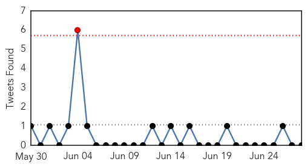
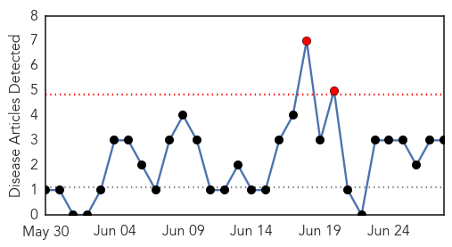
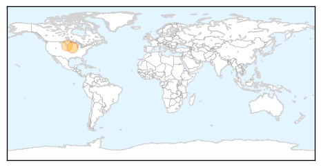
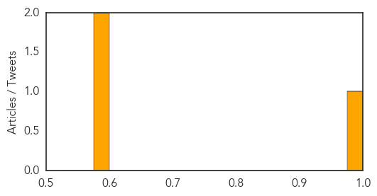

Unknown
30-Day Web Trend
0 alerts, 0 warnings
30-Day Twitter Trend
1 alerts, 0 warnings

Article Locations

Article Confidences

Top Articles:
- 0.917
- Chicago Tribune
- 0.917
- Chicago Tribune
- 0.917
- Chicago Tribune
- 0.917
- Chicago Tribune
- 0.917
- Chicago Tribune
- 0.917
- Chicago Tribune
- 0.917
- Chicago Tribune
- 0.875
- Killer dog disease detected in NSW
- 0.866
- Iraqi Christians flee ISIL fighting
- 0.866
- Gunmen kill four Egyptian soldiers in North Sinai -state media
- 0.866
- Libyan militia leader suspected in Benghazi attack in U.S.- media
- 0.735
- Vermont Health Department urging HIV tests
- 0.720
- Iraq: Medical supplies for Iraqis in conflict-hit areas
- 0.689
- Medical supplies for Iraqis in conflict-hit areas - Iraq
- 0.676
- Latvia Orders Pig Cull to Stem African Swine Fever — Naharnet
- 0.674
- Treating gum disease linked to improvements in other conditions
- 0.649
- Host-directed therapy: A new type of TB treatment
- 0.640
- SGGP English Edition- Japanese encephalitis cases increase in Vietnam
- 0.623
- New law aims to fight tick-borne diseases in Pa.
- 0.610
- Iraq: Medical supplies for Iraqis in conflict-hit areas
- 0.571
- Kayaker nearly dies after catching disease from rat urine while paddling down a river
Top Tweets:
-
No tweets found for Jun 28, 2014
West Nile Virus
30-Day Web Trend
2 alerts, 0 warnings

30-Day Twitter Trend
0 alerts, 0 warnings

Article Locations
Article Confidences
Top Articles:
Top Tweets:
-
No tweets found for Jun 28, 2014